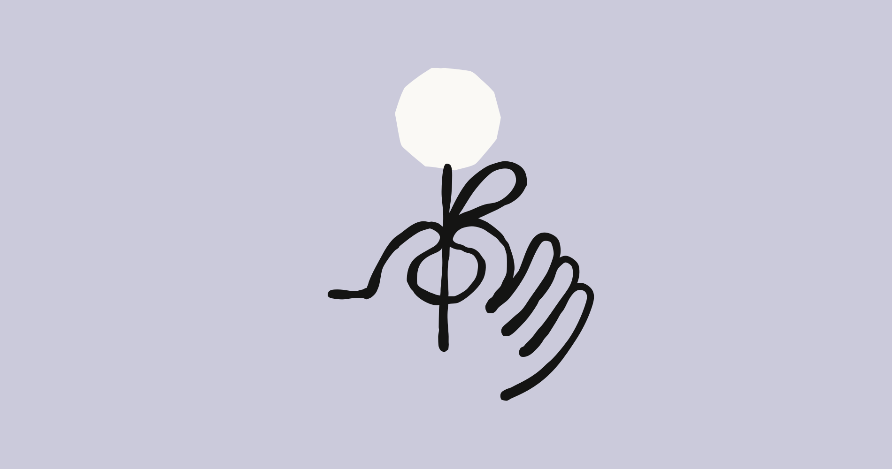

صورة مصدرنماذج وسلوك · اليوم · مصدر مباشر
عنوان الخبر
قيم Claude تتغير بين العربية والإنجليزية
ليش يهم: النتيجة تهم أي شخص يبني محتوى أو منتجات عربية على Claude: النموذج لا يغيّر اللغة فقط، بل يغيّر درجة الدفء والحذر والاختصار حسب اللغة والنموذج.
افتح نص الخبر والصياغة
نص الخبر ومعلوماته
Anthropic حللت 300 ألف محادثة حقيقية، وضغطت آلاف القيم التي تظهر في ردود Claude إلى أربعة محاور قابلة للقراءة. من النتائج اللافتة أن ردود Claude بالعربية تميل أكثر إلى الدفء والاختصار والتنفيذ مقارنة بالإنجليزية، وأن النماذج نفسها تختلف في الحذر والعمق والصرامة.
زاوية بدر هنا أن تعريب المنتجات ليس ترجمة واجهة. إذا كان النموذج يجاوب العربي بحرارة واختصار أكثر، فاختبار AI عربي يحتاج مقاييس تخص سلوك العربية نفسها.
صياغة مقترحة للتغريدة
بحث جديد من Anthropic يقول إن Claude لا يغيّر اللغة فقط، بل يغيّر جزءًا من “طبعه” معها. في العربية يميل أكثر للدفء والاختصار والتنفيذ، وفي الإنجليزية يظهر حذر وعمق أكثر. هذا مهم لنا عربيًا: تقييم النماذج بالعربي لا ينفع يكون ترجمة لاختبار إنجليزي. لازم نقيس السلوك داخل العربية نفسها.